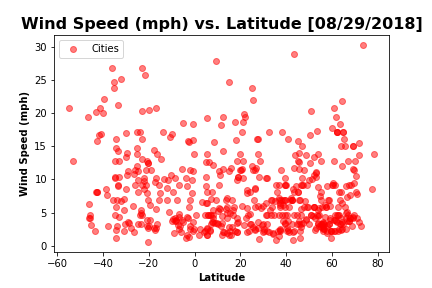

The purpose of this project was to analyze how weather changes the closer one gets to the equator. Data was first pulled from OpenWeatherMap API to compile a dataset spanning over 500 cities.
After assembling the datset, Matplotlib was used to plot various aspects of the weather versus the latitude. Factors examined included: temperature, cloudiness, wind speed, and humidity. This site contains the source data as well as the visualizations created as part of these analyses. Explanations and descriptions of any trends within the analyses are provided on the appropriate pages.